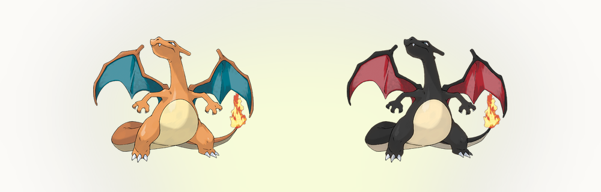
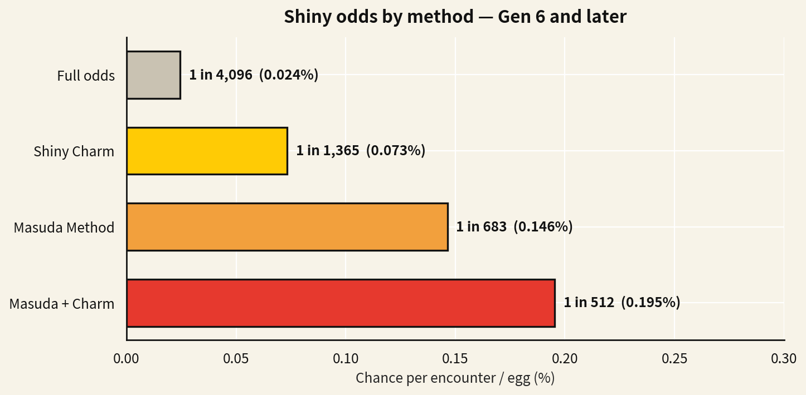

そもそも「基本確率」とは？ 1/8192という基準
色違いのポケモンは色が違うだけの存在で、種族値もわざも同じ、ゲーム上の有利はまったくありません。それでも狩るのは、ただ希少だからです。基本確率で狩るとは、助けを一切使わないということ。ひかるおまもりなし、孵化の小細工なし、サンドイッチなし。基本確率と自分だけの勝負です。1999年の金・銀からブラック2・ホワイト2まで、その基本確率は8,192分の1でした。
最初の色違いは、なかよしどうくつのズバットだったと言いたいところですが、正直に言えば第2世代のどの洞窟でもよかった気がします。覚えているのは、きらめきと、そのあとの慌てぶりだけ。子どもだったので、あれが何なのかわかっていなかったんですね。当時のプレイヤーの多くは1匹も見ていません。それも当然で、あの確率は見られるようには作られていませんでした。
この数字は16ビットの計算から出てきます。ゲームコードで確認され、長年 Bulbapedia にまとめられてきた話では、エンジンは隠しパラメータをある範囲と照合していて、65,536通りのうち当たりは8通りでした。8/65,536を約分すると1/8,192。1回のエンカウントあたり0.0122%です。
基本確率での狩りの「平均」は8,192回ですが、平均値はほとんど役に立ちません。1回1回のエンカウントは独立した抽選なので、36.8%の人は8,192回やっても何も出ず、13.5%の人はその倍まで行きます。問いを裏返すと、計画に使える数字になります。ちょうど8,192回やった時点で1匹以上出ている確率は、約63%しかありません。50%に届くのはおよそ5,678回目。90%まで行くには約18,862回かかります。 色違いの出現率 の計算ツールなら、どんな確率でもこの変換ができます。確率を入れれば、必要なエンカウント数が出ます。
世代別の基本確率
シリーズの歴史のなかで、基本確率が変わったのはたった一度だけです。そして、公式がその事実を明かすときの発表の場が Pokemon.com です。ポケモン X・Y（第6世代、2013年）は、静かに全員の運を2倍にしました。当たりの範囲が65,536通りのうち8通りから16通りに広がり、4,096分の1、約0.0244%になったのです。LEGENDS アルセウス、Let's Go ピカチュウ・イーブイ、スカーレット・バイオレットまで、それ以降の本編はすべて、上乗せなしならこの1/4,096が出発点になります。作品ごとの数字は Serebiiで世代ごとに確認できます。ですから「昔は色違いはもっと出づらかった」と言う人は正しくて、それでも足りません。14年間、2倍レアだったんです。

| 世代・時代 | ゲーム | 基本の色違い確率 | 割合で表示 |
|---|---|---|---|
| 第2世代 | 金・銀・クリスタル | 8,192分の1 | 0.0122% |
| 第3世代 | ルビー・サファイア・エメラルド・ファイアレッド・リーフグリーン | 8,192分の1 | 0.0122% |
| 第4世代 | ダイヤモンド・パール・プラチナ・ハートゴールド・ソウルシルバー | 8,192分の1 | 0.0122% |
| 第5世代 | ブラック・ホワイト・ブラック2・ホワイト2 | 8,192分の1 | 0.0122% |
| 第6世代 | X・Y・オメガルビー・アルファサファイア | 4,096分の1 | 0.0244% |
| 第7世代 | サン・ムーン・ウルトラサン・ウルトラムーン・Let's Go | 4,096分の1 | 0.0244% |
| 第8世代 | ソード・シールド・BDSP・LEGENDS アルセウス | 4,096分の1 | 0.0244% |
| 第9世代 | スカーレット・バイオレット | 4,096分の1 | 0.0244% |
第2世代は例外です。色違いは隠しパラメータではなく個体値から決まっていたので、確率は同じ8,192分の1でも、中身の仕組みはまったく別物でした。第2世代の色違いを現代の作品に連れてくると、いまも独特の個体値の並びを引きずっています。ゲームフリークも、8,192分の1の仕組みが実質見えないと分かっていたのでしょう。金・銀ではいかりのみずうみに赤いギャラドスが固定で出現します。全員が少なくとも一度はこの仕組みに出会うための、確実な色違いです。
国際孵化の仕組み：1/683という計算
国際孵化は、ゲームフリークの増田順一ディレクターにちなんだ名前です。ダイヤモンド・パールの発売後、ご本人のブログで説明されました。くわしくは Bulbapediaの解説 が、この仕組みの来歴を細かく追っています。現実の言語設定が違う2本のソフトのポケモンを預けると、タマゴ1個あたりの色違い判定が1回ではなく複数回になります。英語版のメタモンと日本語版のガブリアスが定番の組み合わせです。第4世代と第5世代では1個につき5回で、1/8,192がおよそ1/1,639に。第6世代以降は2倍になった基本確率に対して6回で、6/4,096、約1/683、タマゴ1個あたり0.146%です。
「判定が増える」は比喩ではありません。1回の判定が当たりやすくなるのではなく、判定そのものを何度も繰り返し、どれか1つでも当たれば成功と数えます。だから伸びるのは回数であって、パーセントポイントではありません。そして対象はタマゴだけ。ここは思っている以上に大事です。野生、レイド、固定シンボルには効かず、伝説は孵化できません。有名な長期戦の多くが、必然的に基本確率か、ひかるおまもりだけの勝負になるのはそのためです。
ひかるおまもりを重ねる：1/512への道
ひかるおまもりはポケモン図鑑を完成させた報酬で、そのセーブデータで対象になる判定すべてに、恒久的に2回分の判定を追加します。現代の作品でこれ単体を使うと、1/4,096がおよそ1/1,365（3/4,096）になります。ひかるおまもりも国際孵化も回数を足すものなので、単純に合算できます。国際孵化の6回にひかるおまもりの2回で、タマゴ1個あたり8回。8/4,096はちょうど512分の1、0.195%です。狩りコミュニティで言われる1/512とは、つまり4,096分の6+2にすぎません。攻略サイトの Game8 でも、作品ごとに同じ重ね方が載っています。

現代の極端な数字も、同じ仕掛けです。スカーレット・バイオレットはキラキラパワーのサンドイッチと大量発生を重ねられます。全部重ねたときの数字は スカーレット・バイオレットの色違い確率にまとまっています。LEGENDS アルセウスは調査レベルと大量発生のボーナスで、1回の出現につき最大32回の判定になります。128分の1で、本編が出したなかで最良の確率です。組み合わせの一覧は ポケモン LEGENDS アルセウスの色違い確率にあります。ソード・シールドは、同じ種を500回倒したあとに判定が増えます（ソード・シールドの色違い確率 に倒した回数の段階がまとまっています）。ただしこれはコードから読んだ数字ではなく、コミュニティが実測したものなので、細かい値は目安と考えてください。こうした手法の最新の集計は r/ShinyPokemon が追いかけています。どの作品でも共通しているのは、これまで実装された色違いの狩り方は、すべて「判定を増やす」ものだったということです。
長い狩りに出る前に、ひとつだけ注意を。ここで燃え尽きる人が多いのです。これは1回あたりの確率であって、タイマーではありません。長年この話を続けている Smogon フォーラム も、初めて狩る人に同じことを言い続けています。1/512でも、1,000個続けて何も出ない確率は14.2%あります。何かが「そろそろ来る」わけではありません。判定は毎回まっさらから始まるので、平均を基準に計画して、出ない時期に意味を読まないことです。
自分の条件——作品、ひかるおまもり、国際孵化、大量発生のレベル——で計算したいなら、色違いの出現率の計算ツールがその計算をそのままやってくれます。実際の条件を選ぶだけで、確率、平均の狩り回数、そして計画しているセッション中に1匹以上出る確率まで返ってきます。上の計算と同じものを、一般的な表ではなくあなたの狩りに当てはめただけです。すべての確率の元になっている図鑑データは、 PokemonDBの全国図鑑 が、狩る人がいちばん引用する資料です。